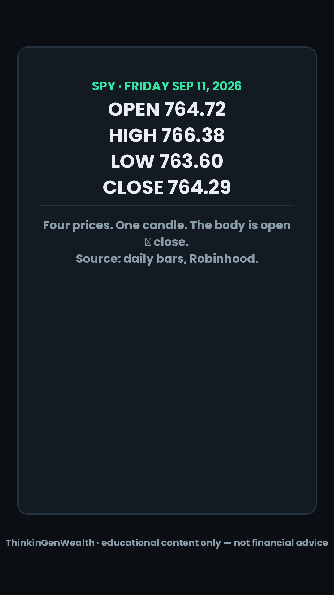
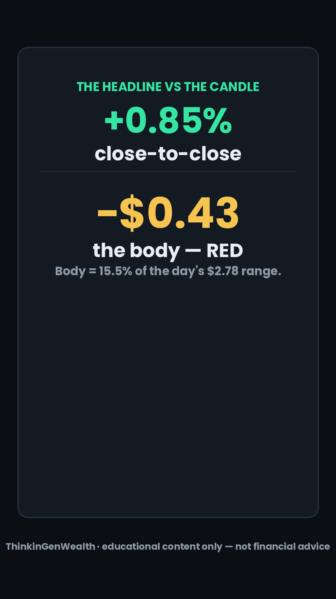
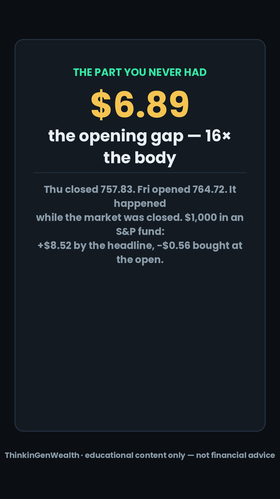
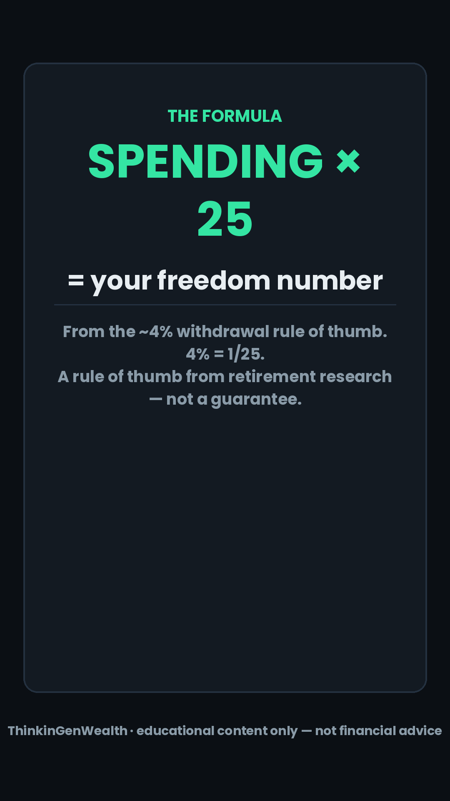
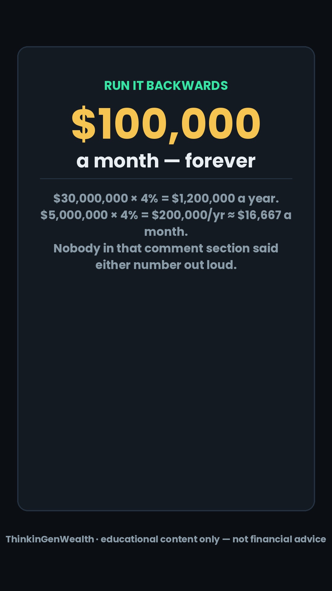
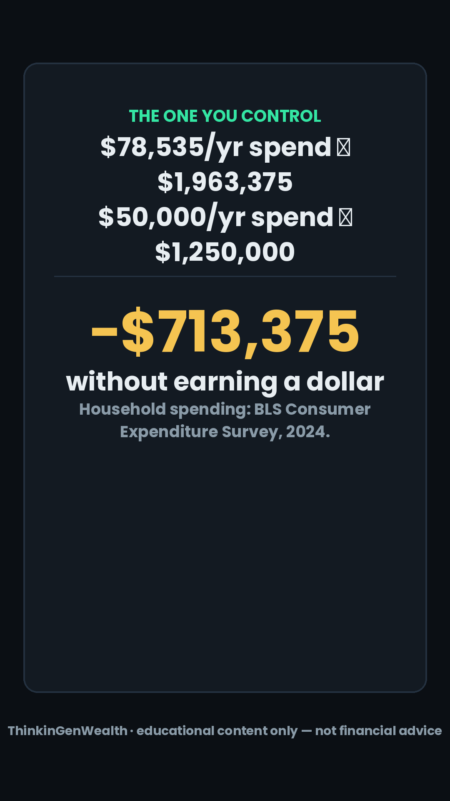

ThinkinGenWealth — Weekly Content Board
THE HUB · EVERYTHING FOR THE WEEK LIVES HERE
Today — Sunday Sep 13 · podcast final + publish
Ep 5 — "The Fed Might Hike 7 Weeks Before The Election. Should It?"
All three FILL-LIVE blanks from last week's draft are filled and verified this morning: Apple's phone came in at $1,999 (and it's the iPhone Duo, not "Ultra"), August PPI printed +0.4% m/m, +5.4% YoY, and August CPI printed +0.4% m/m, 3.4% YoY with core at 2.4%. Two things changed enough to move the script: diesel broke $6.00 for the first time in history ($6.05 Friday), so Topic 2's headline number is no longer $5.85 — and the hike odds went from a coin flip to 85.5%, which is the branch that picks title (C).
★ This week's anchor
"Forty-Six Dollars A Month" — the Fed's first hike in 1,148 days, cut as a credit-card story
On Wednesday at 2:00pm ET the Fed is 85.5% priced to raise rates for the first time since July 26, 2023. Every finance account in the country will cover the event. We cover what it does to one card — and the honest answer is about a dollar. Prime goes 6.75% → 7.00%, your variable APR follows within a billing cycle, and on a $5,000 balance that's +$1.04 a month. Meanwhile your own issuer publishes a range — roughly 17.99% to 28.99%, "based on creditworthiness" — and eleven points on that same $5,000 is $45.83 a month, 44× the Fed. Over the three years it takes to get into a first place, that's $1,649.88. The Fed gets the headline; the file gets the money.
This week at a glance — 3 posts + a conditional 4th + the Sunday anchor
no recording
$46 vs $1
conditional 4th
$6.89
Ep 5 cuts
IG-FIRST
+ publish
The 7-day plan — click any day for everything you need to post it
| Time | Beat | The line | B-roll cut | Loop |
|---|---|---|---|---|
| 0:00–0:02 | COLD OPEN | "Forty-six dollars a month." | TUE_V1 · hook box | OPEN |
| 0:02–0:10 | STAKES | "Same card, same five grand, two different people." | TUE_V2 card in hand | open |
| 0:10–0:35 | PT 1 | prime → your APR, and it's $1.04 | TUE_V3 · PT 1 header | small loop closes |
| 0:35–0:42 | MID RE-HOOK | "So where do the other forty-five come from?" | tile TUE_T1 | BIG LOOP RE-OPENS |
| 0:42–1:10 | PT 2 | the Schumer-box range — 11 points wide | TUE_V4 · PT 2 header | escalates |
| 1:10–1:45 | PT 3 · PAYOFF | $45.83/mo · $1,649.88 over 3 years | TUE_V5 · PT 3 + tile TUE_T2 | BIG LOOP CLOSES |
| 1:45–2:00 | LOOP-CLOSE | back to "forty-six dollars a month" + sign-off | TUE_T3 / V0 Ken Burns | rewatch |


▸ Full word-for-word script — TUE (read it cold, it stands alone)
ONE IDEA: The Fed can move your credit card by about a dollar a month. Your credit file already moves it by forty-six.
OWNED NUMBER: $46 a month — against $1.
ARTIFACT: The $46 Sheet · trigger word 46.
Cold open — 0:00, mid-sentence, no greeting
Forty-six dollars a month.
That is the gap between two people holding the exact same credit card, from the exact same bank, with the exact same five thousand dollars sitting on it. Same card. Same week. Forty-six dollars apart, every single month.
Stakes
[b-roll: card in hand]
And on Wednesday afternoon your whole feed is going to be about the Federal Reserve, because at two o'clock Eastern they're expected to raise interest rates for the first time in one thousand one hundred and forty-eight days. That's three years and change. It's a real story. But I want you to know exactly what it does to you before it happens — because for your card, it's worth about a dollar.
One dollar. The other forty-five are already yours, and they have been for a while.
[Cut to Pt 1 clip.]
Pt 1 · What Wednesday actually moves — and it's about a dollar
Here's the machinery, in plain English. The Federal Reserve sets one interest rate — the rate banks charge each other overnight. Right now it sits in a range of three and a half to three and three-quarters percent. Banks take that number, add three points, and call it the prime rate — that's the "starting price" of borrowing in America. Today prime is six and three-quarters percent.
Now go find your credit card's terms. Almost every card in this country has what's called a variable APR — APR is just the price tag on borrowing, quoted per year — and variable means it isn't a fixed number at all. It's a formula. It literally reads "the prime rate plus a margin." Prime is the part the Fed moves. The margin is the part you move.
So here's your receipt, and you can check this in about thirty seconds. Open your card's app, go to statements, and find the page called "interest charge calculation" or "rates and fees." It will say something like "your variable APR is the prime rate plus fifteen point four percent." Those exact words are printed on your account. Go look. I'll wait.
When the Fed raises a quarter point on Wednesday, prime goes from six and three-quarters to seven percent. Your margin doesn't change. So your APR goes up one quarter of one percent, and it usually shows up within one or two billing cycles — nobody calls you, nobody asks.
What's a quarter point worth? The Federal Reserve's own G-nineteen report says the average APR on cards that actually carry a balance is twenty-two point one five percent. On five thousand dollars, that's one thousand one hundred and seven dollars and fifty cents a year — about ninety-two dollars a month just in interest. Add the quarter point and you're at twenty-two point four zero percent, which is one thousand one hundred and twenty dollars a year.
That's twelve dollars and fifty cents more. Per year. One dollar and four cents a month.
[Tile TUE_T1 full screen: "THE FED: +$1.04/mo"]
So that's Wednesday. One dollar and four cents. But that ninety-two dollars a month you're already paying? That's the number nobody's covering. [Cut to Pt 2 clip.]
Pt 2 · The range printed on your own card — and why you're not at the bottom of it
Here's where the forty-five dollars lives, and the proof is published by the bank itself.
Pull up any major credit card's terms page — the issuer's own website, the box the government makes them print. It does not show you one APR. It shows you a range. Something like seventeen point nine nine percent to twenty-eight point nine nine percent, and then five words that decide your whole financial life: "based on your creditworthiness."
That's the same card. Same bank. Same week. Same paper application. Eleven percentage points apart, and which end you land on is decided before you ever swipe it.
That box is called the Schumer box — it's been required by law on every card offer since 1989 specifically so you could compare them, and almost nobody reads it. Go look at one right now. The range is right there.
Eleven points on five thousand dollars is five hundred and fifty dollars a year. Forty-five dollars and eighty-three cents a month.
[Tile TUE_T2: "YOUR FILE: $45.83/mo — 44× the Fed"]
So run the two side by side. The Fed, on Wednesday, with a press conference and a hundred headlines: one dollar and four cents. Your credit file, quietly, every month since you opened the account: forty-five eighty-three. That is forty-four times bigger.
Therefore the question isn't what the Fed does Wednesday. It's what's in the file. [Cut to Pt 3 clip.]
Pt 3 · Payoff — what actually sets your margin, and what $46 a month really buys
Three things decide where you land in that range, and all three are things you touch.
One — how much of your limit you're using. That's called utilization. If your limit is a thousand and you're carrying four hundred, you're at forty percent. Under thirty is the line most scoring models care about, and under ten is where the best files sit. This one is the fastest to fix — it updates as soon as your statement closes. Do this today: pay the card down before the statement date, not the due date. The statement balance is the number that gets reported.
Two — whether you've ever been late. A single payment thirty days past due can sit on your report for seven years. Turn on autopay for the minimum right now — that's tonight, in the app, two taps — so a bad week never becomes a bad seven years. Then pay more than the minimum manually.
Three — how long your file has existed and how many kinds of credit are in it. This one is just time, which is exactly why you don't close your oldest card. That's the single most common self-inflicted wound I see.
Now here's the number that started this, finished.
Forty-five dollars and eighty-three cents a month, for the three years it takes most people to save up and get into their first place, is one thousand six hundred and forty-nine dollars and eighty-eight cents. Sixteen fifty. That is a security deposit and a first month's rent in most of this country — and it is the exact same five thousand dollars of debt as the person paying seventeen ninety-nine. You didn't borrow more. You just borrowed it on a worse file.
Loop-close
So Wednesday at two, when it's all over your feed — it's real, it matters, and it's worth one dollar and four cents on your card. Forty-six dollars a month is the one the Fed has nothing to do with. That one's yours.
Discord bridge — one beat BEFORE the sign-off
Comment 46 and I'll send you The $46 Sheet — the exact three lines to find on your statement, your issuer's published range, and the order to fix the three things above. It's free, no course, no link. And we're watching the Fed decision live in the Discord Wednesday at two — link in bio.
Educational content only — not financial advice.
Sign-off — last, clean
It's D Waugh, I'm outta here.
Caption (Formula v2 order — trigger on line 1)
Comment 46 and I'll send you The $46 Sheet — free, no course, no link. $46 a month is the gap between two people holding the exact same $5,000 on the exact same card. → Wednesday's expected Fed hike moves prime 6.75% → 7.00%, and a variable card APR follows within 1–2 billing cycles (your terms page says "prime + margin") → On $5,000 that's +$12.50/yr = +$1.04/month → The average APR on cards carrying a balance is 22.15% (Federal Reserve G.19, Q2 2026) → Your issuer's own Schumer box publishes a RANGE — e.g. 17.99%–28.99% "based on creditworthiness" — 11 points wide → 11 points on $5,000 = $550/yr = $45.83/month = 44× the Fed → Over 3 years that's $1,649.88 — a deposit and a first month's rent → Last Fed hike: July 26, 2023 — 1,148 days ago If this is your kind of thing, the whole breakdown lives in our Discord — link in bio. Educational content only — not financial advice. credit card APR, prime rate, Fed rate hike September 2026, variable APR explained, Schumer box, credit utilization, first apartment credit, how credit score affects interest rate, FOMC September 16, credit card interest math #creditcards #creditscore #fomc #personalfinance #moneytips
1. The Fed HOLDS (the ~14.5% outcome — a genuine shock; ship immediately). 2. It hikes and the dot plot prices more than one additional hike for the rest of 2026. 3. The 10-year moves ~10bp on the day (it closed Friday at 4.975%, highest since Oct 2023). 4. August retail sales (8:30am ET, same morning) miss badly enough to become the day's story instead.
If none of those happen, do not post. It becomes Topic 1 evidence on Sunday's Ep 6. Under-shipping a non-event beats shipping a roundup.
| If… | The line | The math (already computed) |
|---|---|---|
| HIKE 25bp | mortgage shoppers feel it first | $350,000 30-yr: 6.76% = $2,272.42/mo → 7.01% = $2,330.91/mo = +$58.49/mo, +$701.87/yr, +$21,056 lifetime |
| HIKE 25bp | card holders barely feel it | prime 6.75% → 7.00%; $5,000 balance +$12.50/yr = +$1.04/mo |
| HOLD | the shock branch | the 85.5% that was priced in unwinds — lead with the 10-yr and PMMS 6.76%, and the honest line: "the market was wrong, and that's the lesson" |
| Either way | the standing comparison | 760-tier vs 620-tier on that same $350K = $359.47/mo (6.76% vs 8.26%) — 6× a hike |
▸ Full word-for-word script — WED (FILL-LIVE)
Cold open
[FILL LIVE — the price, said as a price, in the first two seconds. e.g. "Fifty-eight dollars and forty-nine cents a month."]
That's what the Federal Reserve just did to a three-hundred-and-fifty-thousand-dollar mortgage this afternoon. Not to the economy. To a payment.
Stakes
At two o'clock Eastern the Fed [raised / held] interest rates, [the first increase in 1,148 days / and the hike the market had at 85.5% didn't come]. Here's the only thing that matters: which of your debts just moved, which didn't, and by how much. Three of them.
Pt 1 · The mortgage
If you're shopping for a house, this is the one that moved and it moved today, not next month — because mortgage rates don't come from the Fed, they come from the ten-year Treasury, which is the market's bet on where all of this goes. Freddie Mac's thirty-year average printed six point seven six percent last Thursday, and the ten-year closed Friday at four point nine seven five — its highest since October 2023. [FILL LIVE: where the 10-yr sits now]. On a three-fifty loan, a quarter point is fifty-eight dollars and forty-nine cents a month. Over thirty years, twenty-one thousand.
Pt 2 · The card
Your credit card moved too, and it barely matters. Prime goes six and three-quarters to seven percent, your variable APR follows within a billing cycle or two, and on a five-thousand-dollar balance that's one dollar and four cents a month. One dollar. We did this Tuesday — the forty-six dollars on your card is your file, not the Fed.
Pt 3 · Payoff — what did NOT move
And here's the one nobody says out loud. On that same three-hundred-and-fifty-thousand-dollar mortgage, the gap between a 760 credit file at six point seven six percent and a 620 file at eight point two six is three hundred and fifty-nine dollars and forty-seven cents a month. The Fed just moved fifty-eight. Your file moves three-fifty-nine. It's six times bigger, it's decided before you apply, and it did not change today at all.
Loop-close
So the number that led the news today was [FILL LIVE]. The number that decides what you actually pay was set months ago, by you.
Discord bridge
Comment HIKE and I'll send you The Hike Sheet — what a quarter point changes on a card, a car note and a mortgage, and what it doesn't. Free. And the full argument's happening in the Discord right now — link in bio.
Educational content only — not financial advice.
Sign-off
It's Wolf, I'm outta here.
| Time | Beat | The line | B-roll cut | Loop |
|---|---|---|---|---|
| 0:00–0:02 | COLD OPEN | "Six dollars and eighty-nine cents." | THU_V1 · hook box | OPEN |
| 0:02–0:10 | STAKES | green day, red candle, your account | THU_V2 phone chart | open |
| 0:10–0:40 | PT 1 | a candle is a day's receipt — four prices | THU_V3 · PT 1 + tile T1 | closes |
| 0:40–0:48 | MID RE-HOOK | "So why was Friday's body red?" | tile THU_T1 | RE-OPENS |
| 0:48–1:20 | PT 2 | body −$0.43, only 15.5% of the range | THU_V4 · PT 2 + tile T2 | escalates |
| 1:20–1:55 | PT 3 · PAYOFF | $6.89 gap = 16× the body | THU_V5 · PT 3 + tile T3 | CLOSES |
| 1:55–2:10 | LOOP-CLOSE | back to "six eighty-nine" + sign-off | THU_V0 Ken Burns | rewatch |





▸ Full word-for-word script — THU
ONE IDEA: The candle's body is the only part of the day you could actually have traded — and last Friday it was red on a green day.
OWNED NUMBER: $6.89.
ARTIFACT: The Candle Card · trigger CANDLE.
Cold open
Six dollars and eighty-nine cents.
Last Friday the S&P 500 closed up point eight five percent. Green day. Good day. And if you opened your first brokerage account that morning and bought when the market opened, you finished the day down. Not up a little. Down.
Stakes
[b-roll: phone chart]
This is the thing that confuses everybody who's brand new, and nobody explains it: the number on the news and the number in your account are measuring two different things. Once you can read one candle, you never get fooled by that headline again. So let's read one — the real one, from last Friday. Pull it up on your own phone while I talk.
[Cut to Pt 1.]
Pt 1 · A candle is a day's receipt — it has four prices in it, not one
Open any investing app, tap any stock or fund, and switch the chart from the squiggly line to candles. Now tap "one day." That little shape you're looking at is one trading day, and it is holding four separate prices.
The open — where it started when the bell rang at nine-thirty Eastern. The close — where it finished at four. The high — the most expensive it got at any second in between. And the low — the cheapest.
The fat part in the middle is called the body, and the body only ever shows two of those four: the open and the close. If the close is above the open, the body's green. If the close is below the open, it's red. The thin lines poking out the top and bottom are called wicks — those are the high and the low, the two furthest places the price went and couldn't stay.
Think of it as a receipt for the day. Where it started, where it ended, and the two most extreme prices anybody paid.
Here are Friday's four numbers, off the actual chart. Open: seven sixty-four seventy-two. High: seven sixty-six thirty-eight. Low: seven sixty-three sixty. Close: seven sixty-four twenty-nine.
[Tile THU_T1 full screen: the four prices]
Look at the open and the close again. It opened at 764.72 and closed at 764.29. It closed lower than it opened. On a day the news called up point eight five percent, that candle's body is red. [Cut to Pt 2.]
Pt 2 · The body is the only part of the day you could actually have traded
So which one's lying? Neither. They're measuring from different starting lines.
That "up point eight five percent" headline compares Friday's close to Thursday's close. It's a day-over-day number. The candle body compares Friday's close to Friday's open — it's a during-the-day number. And the only part of the day you could actually buy into is the during-the-day part, because the market was closed for the other part.
Friday's body was negative forty-three cents. Forty-three cents down, across an entire session. And the whole day's range — high minus low — was two dollars and seventy-eight cents. So the body was only fifteen and a half percent of the range. Six-sevenths of everything that happened Friday happened inside the wicks and went nowhere.
You want to see the extreme version of that shape? Look one candle to the left, at Thursday the tenth. Open 758.03, close 757.83 — a body of twenty cents on a three-dollar-forty-seven range. Five point eight percent of the range. A body that tiny has a name: a doji. It's the picture of a market that fought all day and finished exactly where it started. Nobody won.
But none of that explains where the point eight five percent came from. [Cut to Pt 3.]
Pt 3 · Payoff — the gap, and the six dollars and eighty-nine cents you never had a shot at
Thursday closed at 757.83. Friday opened at 764.72.
That's a jump of six dollars and eighty-nine cents — up point nine one percent — and it happened while the market was closed. August inflation came out at 8:30 in the morning, an hour before the bell, and by the time anyone could press a button, the price had already moved. There is no candle covering that jump. There's a blank space on the chart. That blank space is called a gap, and it is the single most misread thing on a beginner's chart.
Now put the two side by side. The gap: six dollars and eighty-nine cents. The body: negative forty-three cents. The gap was sixteen times the size of the entire tradeable day.
[Tile THU_T3: "GAP $6.89 · BODY −$0.43 · 16×"]
Here's what that does to real money. A thousand dollars in an S&P 500 fund on Friday: the headline says you made eight dollars and fifty-two cents. True — if you already owned it Thursday night. If you bought at the open Friday morning, you finished the day down fifty-six cents. Same fund. Same day. Same headline. The difference is entirely a gap you were asleep for.
That's the whole lesson, and it's the reason the candle exists: a percentage tells you what happened to the market. A candle tells you what happened to anyone who traded it.
Loop-close
Six dollars and eighty-nine cents. It's not in the body, it's not in the wicks, it's in the empty space between two candles — and it was most of Friday.
Discord bridge
Comment CANDLE and I'll send you The Candle Card — one page with the four prices, body versus wick, what a gap is, and the three things a candle absolutely does not tell you. Free, no course, no link. And we read charts together in the Discord every week — link in bio.
Educational content only — not financial advice. Nothing here is a prediction about where anything goes next; this is a candle that already happened.
Sign-off
It's Wolf, I'm outta here.
Caption
Comment CANDLE and I'll send you The Candle Card — free, no course, no link. $6.89 is why the market "rose 0.85%" on Friday and the candle was still red. → A candle holds 4 prices: open, high, low, close. The body = open→close. The wicks = high and low. → SPY Fri Sep 11: open 764.72 · high 766.38 · low 763.60 · close 764.29 → Body = −$0.43 (RED) on a green day — only 15.5% of the day's $2.78 range → The headline compares Friday's close to THURSDAY's close. The body compares it to Friday's OPEN. → Thursday closed 757.83. Friday opened 764.72 = a $6.89 gap (+0.91%) that happened while the market was CLOSED → The gap was 16× the entire tradeable body → $1,000 in an S&P fund: +$8.52 by the headline, −$0.56 if you bought at the open → Thu Sep 10 beside it: body −$0.20 on a $3.47 range = 5.8% — that shape is called a doji If this is your kind of thing, the whole breakdown lives in our Discord — link in bio. Educational content only — not financial advice. how to read candlesticks for beginners, candlestick body vs wick, what is a doji, stock chart gap explained, open high low close, reading a daily chart, first brokerage account, beginner investing chart, candle chart explained, SPY daily candle #candlesticks #stockmarket #investingforbeginners #tradingbasics #personalfinance
| Time | Beat | The line | B-roll cut | Loop |
|---|---|---|---|---|
| 0:00–0:03 | COLD OPEN | read the comment verbatim, over the screenshot | EYL screenshot → SAT_V1 hook box | OPEN |
| 0:03–0:12 | STAKES | "the number you pick decides if you start at all" | SAT_V2 calculator | open |
| 0:12–0:42 | PT 1 | your number = annual spending × 25 | SAT_V3 · PT 1 + tile T1 | closes |
| 0:42–0:50 | MID RE-HOOK | "so run it backwards on thirty million" | tile SAT_T1 | RE-OPENS |
| 0:50–1:20 | PT 2 | $30M = $100,000 a month, forever | SAT_V4 · PT 2 + tile T2 (hold it) | escalates |
| 1:20–1:55 | PT 3 · PAYOFF | −$713,375 without earning a dollar | SAT_V5 · PT 3 + tile T3 | CLOSES |
| 1:55–2:15 | LOOP-CLOSE | "he did the math without doing the math" | SAT_V6 sunset | rewatch |





▸ Full word-for-word script — SAT
ONE IDEA: $30 million isn't a freedom number — it's a $100,000-a-month spending habit. Your number is your spending × 25.
OWNED NUMBER: $100,000 a month.
ARTIFACT: The 25× Card · trigger 25.
Cold open — read the comment straight, no setup
"Nah, only need five million and a paid-off house. Thirty is for those addicted to material things."
That's a real comment, posted yesterday, under Earn Your Leisure's episode asking what your financial freedom number is. And here's my read: that guy is closer to right than anyone else in that comment section — and he doesn't know why, because nobody in that thread did a single calculation.
Stakes
This matters more than it sounds like. The number you put on "free" is the thing that decides whether you start this month or never start at all. If you believe the answer is thirty million dollars, you close the app. Nobody opens a brokerage account chasing thirty million. That's why the number has to be a real number, and it takes about sixty seconds to find yours.
[Cut to Pt 1.]
Pt 1 · Your freedom number is your spending times twenty-five
Here's the mechanism, and it's one multiplication.
Financially free means your money covers your life without you working. So the question was never "how much do I want." It's "how big does a pile have to be so that pulling my yearly costs out of it doesn't drain it."
There's a widely used rule of thumb for that, and it comes from a body of research into how long retirement money lasts: you can withdraw roughly four percent of a portfolio in the first year, adjust it for inflation after that, and historically it held up over a thirty-year retirement. It's a rule of thumb, not a guarantee — markets don't owe anybody a schedule. But it's the standard starting point.
And four percent is just one twenty-fifth. So flip it around: your number is what you spend in a year, times twenty-five. That's it. That's the whole formula.
Here's your receipt, do it right now. Open your banking app, find last month's total money out — not your salary, what actually left. Multiply it by twelve. Multiply that by twenty-five. That's your number, and I'd bet most of you have never seen it before.
[Tile SAT_T1: "YOUR NUMBER = ANNUAL SPENDING × 25"]
But now do it backwards, on the number everybody in that comment section was arguing about. [Cut to Pt 2.]
Pt 2 · Thirty million isn't freedom — it's a hundred thousand dollars a month
Thirty million dollars, times four percent, is one million two hundred thousand dollars a year.
Divide that by twelve. One hundred thousand dollars a month. Every month. Forever.
[Tile SAT_T2 — hold it: "$30,000,000 → $100,000/MONTH"]
That is what thirty million actually buys, and I don't think a single person in that argument pictured it. Nobody in there said "I want to spend a hundred grand a month." They said thirty million because it sounds like the number, and then they argued about whether the number was greedy — when the number was never the point. The number is an output. You don't pick it. Your life picks it.
And the five-million guy? Five million times four percent is two hundred thousand a year — about sixteen thousand seven hundred a month. Also a lot. Also probably not his actual life. He guessed too, he just guessed lower.
Therefore — and this is the part that changes what you do Monday — if the number is an output of your spending, then spending is a lever you can pull, and it's the only lever in personal finance that works instantly. [Cut to Pt 3.]
Pt 3 · Payoff — the $713,375 you can erase without earning a dollar
Watch what happens when you move the input.
The Bureau of Labor Statistics says the average American household spends seventy-eight thousand five hundred and thirty-five dollars a year. That's the most recent full-year figure they publish. Times twenty-five, that household's freedom number is one million nine hundred sixty-three thousand three hundred and seventy-five dollars. Almost two million.
Now say that same person builds a deliberate fifty-thousand-dollar-a-year life. Not poverty — fifty grand of actual spending, roughly forty-one sixty-seven a month, which is a real life in most of this country. Fifty thousand times twenty-five is one million two hundred and fifty thousand dollars.
[Tile SAT_T3: "$1,963,375 → $1,250,000 = −$713,375"]
Same person. Same job. Same paycheck. And their freedom number just dropped seven hundred thirteen thousand three hundred and seventy-five dollars.
They didn't earn it. They didn't invest it. They didn't get a raise. They erased three-quarters of a million dollars off the finish line by moving the finish line — which is the only number on this whole list you control from your couch tonight.
That's why raising your income and never touching your spending feels like running on a treadmill that speeds up: every dollar of new lifestyle adds twenty-five dollars to the pile you have to build.
Loop-close
So — "five million and a paid-off house." Paying off the house is the actual move, because it cuts your annual spending, which cuts your number, which is the whole mechanism. He landed on the right answer by instinct and then called thirty million a personality problem. It isn't a personality problem. It's a multiplication problem, and the answer is smaller than you think.
Discord bridge
Comment 25 and I'll send you The 25× Card — one page, three boxes, you'll have your real number in under a minute. Free, no course, no link. And if you want to argue about what "free" costs, that fight's already going in our Discord — link in bio.
Educational content only — not financial advice. The 4% figure is a widely used rule of thumb from retirement research, not a promise — your number depends on your timeline, your taxes and your life.
Sign-off
It's Wolf, I'm outta here.
Caption (the IG-native cut posts FIRST)
Comment 25 and I'll send you The 25× Card — free, no course, no link. $30,000,000 is not a freedom number. It's $100,000 a month, forever. → Under @earnyourleisure's "What's Your Financial Freedom Number?" (Sep 12), the comments are arguing $30M vs "5 million and a paid-off house" — and nobody ran the math → The rule of thumb: you can pull ~4% a year from a portfolio → so your number = annual spending × 25 → $30M × 4% = $1.2M/yr = $100,000/month → $5M × 4% = $200,000/yr = ~$16,667/month → Average US household spends $78,535/yr (BLS Consumer Expenditure Survey, 2024) → a $1,963,375 number → A deliberate $50,000/yr life → $1,250,000 → Same person, same paycheck: −$713,375 off the finish line, without earning a dollar → Spending is the only input in this formula you can change tonight If this is your kind of thing, the whole breakdown lives in our Discord — link in bio. Educational content only — not financial advice. The 4% figure is a rule of thumb from retirement research, not a guarantee. financial freedom number, 4 percent rule explained, 25x rule FIRE, how much do I need to retire, Earn Your Leisure freedom number, coast fire number, annual spending times 25, first brokerage account, budgeting for freedom, safe withdrawal rate #financialfreedom #fire #investing #moneytips #personalfinance
scripts/podcast-rundown-NEXT-SUNDAY-Sep-20-draft.md.

{kind=link}
{kind=link}
{kind=link}
{kind=link}
{kind=link}
{kind=link}
{kind=link}
{kind=link}
{kind=link}
{kind=link}
{kind=link}
{kind=link}
{kind=link}
Two lanes. They never touch.
Lane 1 — the BUSINESS lane. Fix the credit file → cheaper borrowing and real business funding when you actually need it. That's what Tuesday's post is about: the $46 a month is the price of a weak file, and the same file sets the mortgage tier ($359.47/month on a $350K loan). Credit work pays for itself in what you stop paying.
Lane 2 — the INVESTING lane. You invest what you EARN, through the brokerage. Earned income only. Never borrowed money. Never margin. Never credit turned into investment capital. Saturday's post is entirely inside this lane: your freedom number is set by your spending, and you fund it out of a paycheck.
Any copy that could be read as "borrow → invest" fails review. There is none on this board.
Why this week's lineup — proven pillar × timely peg × who's actually watching
Last week's numbers
📊 Week of Sep 7–13, 2026 — full live pull, all 3 platforms (Chrome back online)
✅ YouTube tripled — and one post did 84% of it
- "$6 Billion Bond Buyback, Explained — Why Your Mortgage Still Costs $76 More a Month" (published Fri Sep 11): 540 views · 1:23 average view duration · 47.0% avg viewed · 4 likes · 2 comments. Realtime showed 568 views/48h at pull time — still riding.
- Nothing else on the channel cleared 20 views. The prior 7 days (Aug 30–Sep 5) implied roughly 144 views and ~1.0 watch hour — the worst week in the log. One post, correctly built, is the entire difference.
- It is the formula, exactly: ONE idea, pegged to a concrete event, and the owned number is in the TITLE — "$76 more a month" — before anyone presses play.
🔻 TikTok fell by more than half because almost nothing fresh shipped
- Search is now 82.3% of all traffic (For You just 14.1%) — the highest Search share ever recorded on the account, and that is the unhealthy shape, not a win. Search only carries the floor when fresh posts stop.
- Three of the top four posts are 18-month-old evergreen: Tesla/EV rebates 134 in-window (30K all-time) · candlesticks 111 (98K) · debt consolidation 110 (81K). The only fresh post with a pulse was the day-trading "97% lose money" react (~Sep 3): 152 in-window / 955 all-time.
📣 Search queries are visible again after 3 dark weeks — and one is an order
- "how to read candle sticks in trading for beginners" ← that IS Thursday's post
- "Debt advice if you cant get approved for a loan" · "how to do pay later" · "tesla model 3 at 18" · "best everyday credit cards 2026"
- Two new bank adds named here: a BNPL piece and a denial / thin-file piece. "how to do pay later" also became Ep 6's Topic 2.
🔴 Instagram: a 10-day blackout, and the artifact rule proven from the other side
- Newest reel on the grid is Sep 3. The collab gate misses a fifth straight week — this time by not posting at all.
- The six most recent reels: Sep 3 day-trading — 578 views · 478 viewers · 24.6/75.4 split · 6 likes · 0 comments · 0 saves · 3 shares · 0 follows · Sep 1 "most powerful man trades stocks" — 193 · 172 · 82.7% non-followers · 3 · 1 · 0 · 1 · Sep 1 CoreWeave — 219 · 178 · 78.1% · 5 · 1 · 0 · 1 · Aug 31 ASML — 198 · 150 · 72.3% · 6 · 2 · 0 · 1 · (older) 254 · 76.9% · 1 save · and 205 · 78.5%.
- ★ Every one of those four shipped with NO named artifact, NO comment-trigger on line 1, and no owned number in the opening line. Their range is 193–578. The same account running Formula v2 properly three weeks earlier put up 1,400 · 1,642 · 1,866. That's a 3–9× gap on one variable, now measured in both directions.
- ⚠ Saves were ZERO on all four. Saves are the metric an artifact produces. The absence is not a mystery.
- Follows were ZERO on all six.
📺 The "creators your viewers also watched" panel has almost no finance left
- Vinted · Carterpcs (7.1M) · plug-shop tech (3.5M) · LAWYER Angela (1.8M) · CNET (1.1M) · Kelsey McDaniel (68K) · Yahoo Finance (819K) · Square (201K). EYL has dropped out.
- The two biggest posts in "posts your viewers also viewed" are both LAWYER Angela free-PDF guides (45M and 62M views). The named-free-artifact pattern is what our audience's feed is literally made of.
This week's podcast — the Sunday anchor long-form
🎙 TODAY (Sun Sep 13) — Ep 5 FINAL · full word-for-word rundown · records & publishes today
Title (use C — Friday's CPI held at 3.4% and the hike went to 85.5%, which is the branch the draft wrote C for):
"The Fed Might Hike 7 Weeks Before The Election. Should It?" (57 chars)
Alternate if diesel leads: "Diesel Broke $6 For The First Time Ever. Who Pays For It?" (56)
Hosts: Wolf + D Waugh · 40–45 min · record AM → edit → publish today, AM–early-PM ET so it indexes · Screen-share = the Debate Board and nothing else · the HIKE bet settles Wed Sep 16, 2:00pm ET, on next Sunday's show.
🎯 THE THROUGH-LINE (opens cold, resolves in Topic 4):
"The economy just posted its best jobs month in a year — 162,000. So why did everything in your life get more expensive again this week? And who gets to decide what you pay for it?"
| # | The question (as asked on air) | The data bank (on the board) | Timing |
|---|---|---|---|
| 1 | AI took the office jobs and left the bar jobs. Is a $100,000 degree still worth it? | +162K vs ~55K expected · food & drink +59K (36% of the gain) · information −23K (computing infra −8K, publishing −7K, broadcasting −5K) · pay +3.1% vs prices 3.4% = −0.3% real (−$150/yr on $50K) · degree premium $80K vs $47K = +$33K/yr (NY Fed) · 4-yr public sticker ~$103,400 vs ~$56K net · ~12.5% return (NY Fed) | 2:15–13:00 |
| 2 | ⚡ Diesel just broke $6.00 for the first time in history. Should the government cap fuel prices? | $6.05 (AAA, Fri Sep 11) · $5.85 one week earlier · $3.70 a year ago = +63.5% · CA $7.98 · Hormuz ≈ 1/5 of world oil · ME + Russia ≈ 1/3 of diesel exports · distillate stocks at seasonal record lows · one farm's 10,000-gal tank $25K → $45K · CPI energy +16.3% YoY · gasoline +27.4% · fuel oil +52.0% · PPI +5.4% YoY with diesel a named driver | 13:00–24:00 |
| 3 | ⚡ Apple wants $1,999 for a phone that folds. Should you EVER finance a phone? | iPhone Duo (announced Wed Sep 9 — not "Ultra"), $1,999, pre-order Oct 16, ships Oct 23 · $1,999 ÷ 24 = $83.29/mo at a true 0% · same $83.29 on a 22.15% card = 32 months + $665.94 · ⚠ CORRECTED: minimums only (1% of balance + interest, $35 floor) = 8.8 years + $2,191.19 · "no interest for 24 months" ≠ 0% (deferred interest) · avg card APR 22.15% (Fed G.19 Q2 2026) | 24:00–33:00 |
| 4 | The Fed might raise your rates 7 weeks before an election. Should a central bank ever move in an election window? | hike odds 44.4% (Aug 7) → 60.6% (Sep 8) → 85.5% (Sep 12), CME · Kalshi 57% / Polymarket 49% · Waller: no hike (Sep 3) vs Warsh: "price stability is not self-executing" · CPI 3.4% / core 2.4% · 10-yr 4.975% Friday — highest since Oct 2023 · PMMS 6.76% (prior 6.71%, year-ago 6.35%) · $350K 30-yr: 6.76% = $2,272.42/mo, +25bp = +$58.49 · fed funds 3.50–3.75%; last hike Jul 26, 2023 = 1,148 days · midterms Tue Nov 3 · SEP / dot-plot meeting | 33:00–41:00 |
| — | THE CLOSE: OUR TOP 3 STOCKS (nothing pre-loaded; each host names 3 live) + the HIKE bet | empty Team Wolf / Team D frame on the board · bet ref: FOMC Wed Sep 16, 2:00pm ET | 41:00–47:00 |
▸ The full rundown — word-for-word cold open, transitions, landings and outro
COLD OPEN + ≤60-SECOND BET SETTLE — 0:00–2:15
WOLF: "One hundred sixty-two thousand jobs. That's what this country added in August — three times what anyone expected. And in the nine days since: diesel broke six dollars a gallon for the first time in American history, Apple asked two thousand dollars for a phone, inflation refused to come down, and the Fed went from a coin flip to eighty-five percent likely to raise your rates — seven weeks before an election. So here's the question over this whole show: the economy just had a great month. Why did everything in your life get more expensive again this week? And who gets to decide what you pay for it?"
D WAUGH — the settle (≤60s, gracious; pick the branch that's true):
• If Ep 4 aired Sep 6 and staked a CPI-week bet (YouTube shows the podcast "updated 1 week ago," so it probably did — confirm before you roll): "First, a receipt we owe. Last Sunday we staked [the Sep 6 bet]. Friday's CPI printed three point four headline, two point four core — [who eats it]."
• If Ep 4 did NOT air: "First, a receipt from two Sundays ago. Wolf said August payrolls print under fifty thousand — that minus-twenty-three was a trend. I said it lands near consensus and the hike stays live. It printed one hundred sixty-two thousand, and they revised July UP to plus twenty-one. Wolf eats it." WOLF (gracious, ~20s): "Scoreboard's Wolf one, D two. New bet gets staked at the close — and that one has a timestamp: Wednesday, two p.m."
WOLF: "Board's up. Argument one."
TOPIC 1 — the degree & the AI jobs — 2:15–13:00
Format: UNSCRIPTED. Both hosts argue from the data bank — no assigned sides. Whoever lands a stat reads it off the board and cites it out loud.
Teaching beats: the jobs report is two surveys — one asks businesses how many people are on payroll (the 162,000), one asks households whether they're working (the 4.1%); they can disagree, this month they didn't · where it came from: bars and restaurants +59K, local school jobs +42K, factories +16K, health care +13K; where jobs LEFT: information −23K (computing infrastructure/data processing/web hosting −8K, publishing −7K, broadcasting −5K), and one strategist's line worth reading aloud (Hirtle & Co.): "if you squint, you might see the outlines of the AI displacement" · real pay: wages +3.1% vs prices 3.4% — Friday's CPI confirmed 3.4%, unchanged from July — so on $50,000 that's a $1,550 raise against $1,700 of new cost, $150 behind while technically getting a raise · the degree math: median bachelor's ~$80,000 vs ~$47,000 high-school only = +$33,000/yr; four-year public sticker ≈ $103,400, average NET after aid ≈ $56,000; NY Fed's estimated return ≈ 12.5%/yr. The premium is real — the live question is whether AI is eroding the jobs it was built on, and whether the MAJOR now matters more than the degree.
Guardrails: steelman before you swing · label opinions ("here's my read") · no doom — the exit is always on the table.
Education landing (~30s): the degree isn't the decision — the major, the debt and the first job are. Run the NET cost against the actual starting salary of the actual field before signing a loan. Education, not advice.
Transition (word-for-word): "So the jobs came back — at the bar, and on the factory floor. But every one of those paychecks buys less than it did in July, and one number did most of the damage this week. It's not gas. It's the fuel nobody drives on."
TOPIC 2 — ⚡ diesel breaks $6.00 — 13:00–24:00
Format: UNSCRIPTED. Board carries both belts: cap-it / windfall (oil companies reported sky-high profits in July; the NY Fed's K-shaped pump analysis shows the pain lands hardest on lower-income households; a farmer can't just pass it on) vs don't-cap-it (1970s price controls produced shortages; this is a supply problem — Hormuz, Russian refineries, refiners chasing jet fuel — that a cap doesn't fix; the East Coast is entering heating season with record-low distillate stocks).
⚡ THE NUMBER CHANGED SINCE THE DRAFT — LEAD WITH IT. On Friday Sep 11, AAA's national average diesel hit $6.05 — the first time in history it has ever started with a six. One week earlier it was $5.85. A year ago it was $3.70. That is +63.5% in twelve months, and California is at $7.98.
Teaching beats: diesel vs gasoline — same barrel, different cut; diesel runs trucks, trains, tractors and roughly three-quarters of farm equipment, and heating oil is nearly the same molecule, so winter demand competes with the trucks · why now: Hormuz (~1/5 of world oil) effectively shut, Russian diesel refineries offline, ME + Russia ≈ 1/3 of global diesel exports, and U.S. refiners chasing jet-fuel margins · the delay mechanism — a farmer's crop prices are locked months ahead, so the extra $20,000 a tank gets eaten now and shows up in the next contract; diesel is a cost that reaches your grocery store on a delay · it is not in the consumer numbers yet: Friday's CPI already shows energy +16.3%, gasoline +27.4%, fuel oil +52.0% — and that's August data, before the six-dollar print — while producer prices ran +5.4% against consumer prices at 3.4%, a two-point gap with diesel named as a leading driver. That gap is the pipeline.
Guardrails: no politics-scoring — argue the mechanism; the conflict is context, not a side.
Education landing (~30s): three lines a regular person controls this week — call the heating-oil supplier now and ask about a cap or pre-buy plan before the season starts; pull your last three grocery totals as a baseline so you can actually see the pass-through when it lands; and take the fuel hit out of the "wants" 30, not the "savings" 20. Education, not advice.
Transition (word-for-word): "So the government can't make diesel cheaper by Thursday. But there's one price somebody CAN control this week — the one you sign for at the Apple store."
TOPIC 3 — ⚡ financing a $1,999 phone — 24:00–33:00
Format: UNSCRIPTED. Money culture — everyone has a side ("financing a phone means you can't afford it" vs "a real 0% installment is the cheapest money you'll ever borrow"). D's chair leans credit, Wolf's leans budget — but no positions are assigned.
⚡ NAME IT CORRECTLY ON AIR: it's the iPhone Duo, not the iPhone Ultra. Announced Wed Sep 9 at $1,999; pre-orders Oct 16, ships Oct 23. Every rumor called it Ultra and Apple didn't — somebody in the comments will catch it.
Teaching beats: the three prices — $1,999 ÷ 24 = $83.29/month on a true 0% installment, where the total equals the price; the same $83.29 on a card at 22.15% takes 32 months and costs $665.94 (total $2,664.94); and on minimum payments only — using the common structure of 1% of the balance plus that month's interest with a $35 floor — $1,999 takes 8 years and 10 months and costs $2,191.19, so you pay $4,190.19 for a $1,999 phone. (⚠ CORRECTED from the Sep 7 draft, which said 7.7 years / $1,489 using a different minimum formula. Say the assumption out loud: "on a typical minimum of one percent plus interest.") · "No interest for 24 months" is NOT 0% — that's usually deferred interest: it accrues the whole time and gets charged, backdated to day one, if a single dollar is left on month 25. The word to look for in the terms is "deferred." · APR in plain English: the price tag on borrowing, per year · the budget test: can you clear $83 a month for 24 months without touching the emergency fund? If no, the line is the problem, not the phone.
Guardrails: no "never buy nice things" lecture — this is a mechanism debate; label the opinion.
Education landing (~30s): three questions before you sign — is this an installment plan or a promotional card offer? does the agreement's total equal the price? does your budget clear 24 payments? — and tonight, read the "interest charged" line on your own statement. Education, not advice.
Transition (word-for-word): "Which brings us to the one price none of us signs for and all of us pay. Wednesday, twelve people in Washington decide whether your rates go up — seven weeks before an election."
TOPIC 4 — the Fed & the calendar — 33:00–41:00 (the through-line resolves here)
Format: UNSCRIPTED. Both belts on the board: "the Fed should look through the calendar" (Warsh: price stability is not self-executing; inflation has held at 3.4% two months running; the 10-year at its highest since October 2023 says the market already moved) vs "the optics are real and the data is mixed" (Waller publicly favored no hike on Sep 3; wages are already losing to prices; a hike lands on the exact households the fuel shock is hitting).
Teaching beats: what "hike odds" are — the CME FedWatch tool turns bets on the Fed's next move into a percentage, free and public; it went 44.4% Aug 7 → 60.6% Sep 8 → 85.5% Friday, and say the honest caveat out loud: Kalshi had it at 57% and Polymarket at 49% the same week — three markets, three numbers, and that disagreement is a better lesson than any of the three · Friday's CPI, the last number the committee sees: headline +0.4% for the month and 3.4% over the year, identical to July; core +0.3% / 2.4%; gasoline alone +3.9% and more than a third of the entire increase; shelter +0.3%; airline fares +23.4% YoY · why the 10-year matters — it's the market's guess at where this ends up and what mortgages are priced off; it closed Friday at 4.975%, highest since October 2023, and Freddie Mac's 30-year printed 6.76% (up from 6.71%, vs 6.35% a year ago) · the payment: $350,000 over 30 years at 6.76% is $2,272.42/month; a quarter-point passed straight through is $2,330.91 — $58.49 more a month, $701.87 a year, about $21,000 over the life; and the credit-tier gap at the same lender, 760 at 6.76% vs 620 at 8.26%, is $359.47/month — six times the hike. The Fed decides the flip; your file decides the tier · independence, plainly: the Fed is designed to be insulated from elections precisely so it can do unpopular things, and the midterms are Tuesday Nov 3; Wednesday is an SEP meeting, so the dot plot comes out with the decision — not just what they do, but what they say they'll do next · the scale: the last time this committee raised rates was July 26, 2023 — 1,148 days ago. An entire generation of first-time borrowers has never seen the Fed go up.
Guardrails: no party-scoring; no prediction of what the Fed does — the bet is the only forecast, and it's labeled a bet.
Education landing (~30s) — resolves the through-line: a great jobs month doesn't lower your bills. The Fed's decision moves your rates by tens of dollars; your credit tier moves them by hundreds; the fuel shock moves your cart by the week. So the person who decides what you pay is mostly you — the tier, the lines you sign, the cart. Education, not advice.
Transition (word-for-word): "So the Fed gets its vote Wednesday. Before that, we put our own names on the table — top three stocks, mine and his, right now."
THE CLOSE — OUR TOP 3 STOCKS + ⚖️ THE HIKE BET — 41:00–47:00
★ Standing format: each host names his top 3 stocks with his own reasons, live and unscripted. Nothing here is pre-loaded or researched by the engine — the board holds two blank columns.
Guardrails only: watchlist conversation, not recommendations · label opinions ("here's my read") · no price targets, no share-count targets, no "this will go up" · earned money only, never margin · close with "educational content only — not financial advice."
⚖️ The staked bet (word-for-word frame — each host picks his side live):
WOLF: "Wednesday, two p.m. Eastern — hike or hold. The market says eighty-five percent hike. Team Wolf says [HIKE / HOLD]."
D: "Team D says [the other]. One of us eats it next Sunday — and this one has a receipt with a timestamp on it."
BOTH: "Comment HIKE with your side — Team Wolf or Team D — and we'll send you The Hike Sheet: what a quarter-point actually changes on a card, a car loan and a mortgage, and what it doesn't. Free, no course, no link."
OUTRO (word-for-word)
WOLF: "Three takeaways. One — the jobs came back, but pay is still losing to prices by three-tenths of a point; the degree still pays, the major decides how much. Two — six dollars and five cents a gallon is coming to your cart in November, not today; call the oil supplier, reset the cart, protect the twenty. Three — same phone, three prices: zero, six sixty-six, or twenty-one ninety-one in interest — read the word 'deferred,' not the logo. You heard our six names; that's watchlist talk, not advice, and you didn't hear a price target from either of us. Wednesday at two, the Fed settles our bet — comment HIKE, pick a team."
D WAUGH: "We're watching the decision live in the Discord Wednesday at two — link in bio. Come argue it where we can actually answer you."
WOLF: "It's Wolf, I'm outta here."
D WAUGH: "It's D Waugh, I'm outta here."
⚠️ Pre-record checklist (this morning)
✅ All three FILL-LIVE blanks filled — phone $1,999 / iPhone Duo, PPI +0.4% / +5.4%, CPI +0.4% / 3.4%, core 2.4% · ✅ hike odds refreshed (85.5%) · ✅ diesel re-verified ($6.05 record) · ✅ phone minimum-payment math corrected · ✅ no-repeat check re-run · ✅ board = one scrolling page, questions + data only, TOP 3 STOCKS frame empty
☐ Confirm whether Ep 4 aired Sep 6 and which bet to settle ☐ Re-check the YouTube strike before uploading ☐ Resolve the two flagged IG reels before these clips go out ☐ Clip candidates: pull the 3–4 hottest real exchanges in the edit
📝 NEXT SUNDAY (Sep 20) — Ep 6 DRAFT · "The Fed Just Moved The Price Of Money. Who Pays For It?"
[FILL LIVE] gets filled by next Sunday's run (or Saturday night Sep 19). The Debate Board for this episode gets built at finalization, not now.Title branches: (A) "The Fed Just Moved The Price Of Money. Who Pays For It?" (if they hiked) · (B) "They Didn't Hike. The Market Was 85% Sure. Now What?" (if they held) · (C) "Your Card's APR Changed This Week. Nobody Asked You."
🎯 Through-line: "The Fed just moved the price of money for the first time in three years. Every one of us is about to find out who actually pays for that — and almost none of it gets decided in Washington."
| # | The question | The data bank (verified Sep 13 — refresh before recording) | Timing |
|---|---|---|---|
| 1 | Your card's APR changed this week and nobody asked you. Should a lender be allowed to reprice a debt you already owe? | [FILL LIVE — FOMC decision + dot plot] · prime 6.75% → 7.00% on a hike · variable APR = "prime + margin," printed on your own terms page · $5,000 balance +$12.50/yr = +$1.04/mo · the Schumer-box range on a single card runs ~17.99%–28.99% = $45.83/mo = 44× the hike · avg APR on cards carrying a balance 22.15% (G.19 Q2 2026) · CARD Act 2009: an issuer generally can't raise the rate on an existing balance in year one, but a variable rate tied to an index is an exception, and new purchases can be repriced with 45 days' notice · last hike Jul 26, 2023 — 1,148 days | 2:15–13:00 |
| 2 | Buy-now-pay-later doesn't show up on your credit report. Should it? | named by our own TikTok Search this week: "how to do pay later" · pro: invisible debt — an auto lender can't see four open BNPL plans · con: reporting short installments can lower a thin file's average account age and ding the exact people BNPL serves · a missed payment can land in collections and report — upside invisible, downside visible · [FILL LIVE — pull one named provider's current published reporting policy] | 13:00–23:00 |
| 3 | Airline fares are up 23.4% in a year. Did flying just become a luxury again — or was it always priced wrong? | airline fares +2.7% m/m, +23.4% YoY (BLS CPI Aug 2026) against a 3.4% basket — flying got ~7× more expensive than everything else · energy +16.3% YoY; jet fuel named among PPI's leading drivers · PPI +5.4% vs CPI 3.4% = a 2.0-point pipeline gap · lodging +2.4% m/m · deregulation (1978) made flying cheap-and-miserable for 40 years — is a 23% year the correction, or the squeeze? · honest caveat: CPI tracks a fare sample, not your specific flight | 23:00–32:00 |
| 4 | Is the 401(k) match free money — or the reason your raise is small? (aimed at YouTube's 45+ half — 50.7% of the channel) | pro: an instant guaranteed return on the dollar you defer; nothing else does that · con: employers budget total compensation — a long-running labor-economics position that benefits are financed out of wages, and real pay is −0.3% ($150/yr behind on $50K) · the three mechanics nobody checks: vesting (check before you quit), the true-up (max out early and some plans stop matching), catch-up after 50 · [FILL LIVE — this year's 402(g) limit + 50+ catch-up, verify at irs.gov] | 32:00–41:00 |
| — | THE CLOSE: OUR TOP 3 STOCKS + the next bet | empty two-column frame · settle Ep 5's HIKE bet in the cold open first · new bet: [FILL LIVE — a dated, checkable event inside Sep 21–27] · trigger: Comment REPRICE → The Repricing Sheet | 41:00–47:00 |
Transitions already written (word-for-word):
① → ② "So the card you already have got repriced in public. Now here's the debt that never shows up anywhere at all."
② → ③ "So some of what you owe is invisible. Here's something that isn't invisible at all — it's just gotten twenty-three percent more expensive while nobody said anything."
③ → ④ "So that's a price that went up on you. Here's one that supposedly goes up FOR you — and I'm not sure everyone in this chat agrees it's free."
Finalization checklist: fill the FOMC decision + dot plot and settle Ep 5's bet · refresh prime / 10-yr / PMMS (Thu Sep 17) / CME odds · pull a named BNPL provider's reporting policy and quote it · verify the 402(g) limit at irs.gov · re-run the no-repeat check and append the finalized card to the ledger · build the Debate Board · pick the title branch and write the cold open word-for-word · re-check the YouTube strike · confirm the two flagged IG reels are resolved.
Full draft: scripts/podcast-rundown-NEXT-SUNDAY-Sep-20-draft.md
Live news pegs — every figure verified Sun Sep 13, 2026
📅 The week's calendar + the numbers behind every post
The economic calendar, Sep 14–20
- MON Sep 14 — quiet. No major US release.
- TUE Sep 15 — FOMC meeting day one (the two-day meeting is Sep 15–16).
- ★ WED Sep 16 — August retail sales, 8:30am ET (Census advance report) · FOMC decision 2:00pm ET, press conference 2:30pm. This is an SEP meeting — the dot plot comes out with the decision. Hike odds 85.5% (CME FedWatch, Sep 12); Kalshi 57%, Polymarket 49%.
- THU Sep 17 — weekly jobless claims 8:30am · Freddie Mac PMMS (the first mortgage print after the decision).
- FRI Sep 18 — quiet in the US. (The Bank of England and Bank of Japan also meet this week — context, not our lane.)
What already happened — the numbers this week's posts are built on
- August CPI (released Fri Sep 11, BLS): +0.4% m/m, 3.4% YoY — identical to July. Core +0.3% m/m, 2.4% YoY (down from 2.5%). Gasoline +3.9% m/m / +27.4% YoY and accounted for more than a third of the entire monthly increase. Energy +2.1% / +16.3% YoY. Fuel oil +10.1% / +52.0%. Shelter +0.3% / 3.0%. Airline fares +2.7% / +23.4%. Food away from home 3.4%; food at home 2.2%. Used cars +0.4% / −2.3%. CPI-U index 334.980. Next CPI: Wed Oct 14.
- August PPI (released Thu Sep 10, BLS): final demand +0.4% m/m, +5.4% YoY; goods +1.1%, services +0.1%; less foods/energy/trade +0.3% / +4.7% YoY. Diesel fuel named among the leading drivers. Producer prices are running 2.0 points ahead of consumer prices — that gap is the pass-through still in the pipeline.
- Rates: fed funds target 3.50–3.75%; prime 6.75%. Last hike July 26, 2023 — 1,148 days ago. 10-year 4.975% at Friday's close — highest since October 2023. Freddie Mac 30-yr 6.76% (Sep 10), up from 6.71%, vs 6.35% a year ago. Fed G.19 Q2 2026: card APR 22.15% on accounts assessed interest, 20.94% all accounts, ~23.79% new offers.
- Fuel: AAA national diesel $6.05 (Fri Sep 11) — the first $6 print on record, vs $5.85 a week earlier and $3.70 a year ago (+63.5%); California $7.98. AAA gas $4.313 (Sep 13), up from $4.17 the prior week.
- Market tape: S&P 500 +0.9% Friday Sep 11, snapping four losing sessions. SPY daily bars (Robinhood): Thu Sep 10 O 758.03 H 760.11 L 756.64 C 757.83 · Fri Sep 11 O 764.72 H 766.38 L 763.60 C 764.29.
- Apple: the iPhone Duo (not "Ultra") was announced Wed Sep 9 at $1,999; pre-orders Oct 16, ships Oct 23.
- August jobs (Sep 4, context for Ep 5): +162,000 vs ~55,000 expected · unemployment 4.1% · AHE +3.1% YoY · food services +59K · local-govt education +42K · information −23K · June/July revised up a combined 55K.
Why the flagship is the Fed and not diesel
Diesel breaking $6 is the bigger raw number — but it was last week's flagship, and the content-mix rules say lean news days toward a concrete event the viewer can act on. The Fed's Wednesday decision is dated, timestamped, 85.5% priced, and it touches a debt almost everyone in the 18–34 core already has. It also gives us a same-week second beat (the conditional 4th) and a built-in bet for the podcast. Diesel stays alive as Ep 5's Topic 2 tonight and as grocery-pass-through material in October.
Evergreen Reel Bank
🗂 This week's pulls + the full tiered bank (also shipped as a .md with the site)
This week's pulls — two, both as designated STANDBYs
Cooling: #41 (~Oct 5) · #43 (~Sep 28) · #30 ("What NOT to do in a volatile market") still held for a true selloff week — a hawkish dot plot Wednesday could make this that week; pre-cleared · #16 staged as general backup.
⚠ Also flagged: bank reels never carry tickers, share counts or price points — and after this week that is the house standard for all copy, not just bank copy.
🆕 Two new adds queued from this week's live Search pull — number them when next shot: 48 · "Buy now, pay later doesn't show up on your credit report — here's what that actually means" (P2; from the query "how to do pay later") and 49 · "Your freedom number is your spending × 25 — not a vibe" (P3/P5; from Saturday's math). Both comment-trigger reels, both first-milestone framed. Still unshot from prior runs: deferred-interest vs a real 0% · the NET-cost college math · first-car thin-file credit · wick anatomy · Chime-vs-a-real-bank · balance transfers · business credit.
TIER 1 — IG-priority (record/post first)
Cousins of our proven IG winners. Story + debate + comment-trigger.
- Founder / personal story (P5): 7 Behind the scenes of building TGW · 8 A real work day running TGW · 9 Why I started ThinkinGenWealth · 13 How someone in our Discord turned it around · 16 What people think investing is vs what it is · 17 Before vs after I learned money · 29 The moment money got real for me
- Debate-bait + comment-trigger: 10 The investing myth that keeps people broke · 14 Reacting to the worst money advice on my FYP · 18 5-step checklist before you invest a dollar · 22 My unpopular money opinion · 32 3 reasons your money isn't growing · 34 Comment for the free resource
TIER 2 — solid evergreen filler
- Budget / money systems: 1 Small money win this week · 4 The one habit that changed everything · 15 3 moves if I started from $0 today · 21 The question I get asked most · 25 Emergency fund when money's tight · 26 One money move in 5 minutes · 30 What NOT to do in a volatile market · 31 Do this instead of timing the market
- New vs pro / process / mindset: 2 The mistake I learned the most from · 5 The money fear I had to get over · 6 Money lesson I wish I learned at 18 · 11 #1 thing new investors get wrong · 12 My exact process · 23 New investor vs experienced investor · 28 Why most people quit investing in year one
- Community / growth: 20 What I'm building at TGW right now · 35 DM me if you're stuck (hard CTA, weekend only)
TIER 3 — TikTok-Search filler (don't lead IG with these)
- 3 15-second money morning routine · 19 The free tools I actually use · 27 Why DCA actually works · 33 Automate investing in 30 seconds
P2 · CREDIT — D Waugh lane
- 24 The credit habit quietly costing you — the minimum-payment trap, show the math. Live APR re-verified this run: 22.15% (Fed G.19, Q2 2026, accounts assessed interest). Pulled this week as the IG-blackout breaker.
Demographic-driven adds (36+)
- YouTube 35–54 / 45+ core: 36 The 401(k) match you're leaving on the table · 37 Backdoor Roth in 3 steps · 38 Your job pays you in stock (RSUs/ESPP) · 39 Catch-up contributions after 50 · 40 Generational wealth 101
- TikTok 25–34 core: 41 What to do with your first real paycheck · 42 First brokerage account — the exact setup (armed this week) · 43 Buy vs rent — the real math · 44 Kill your student loans faster · 45 Salary negotiation: the 10-minute prep
- Parents 30–44 / broader reach: 46 Investing for your kid — custodial vs 529 · 47 Couples & money
The full bank, with on-screen text and CTA per reel, ships with this site as TGW Evergreen Reel Bank.md.
Your audience — best times + who's watching
👥 Refreshed live Sep 13, 2026 — peak windows, demographics, and the content gaps they imply
Best posting times (ET) — use these, not generic advice
- TikTok: most-active Thu Sep 10, 3–4pm ET — the eighth straight pull inside the 12–7pm core. Standing read: post reach-spikes 3–7pm; evergreen anywhere in the 10a–7p band.
- Instagram: 3pm peak, strong 12–6pm — still carried from Jul 26. Confirmed again this run that
instagram.com/<handle>/insights/redirects to the profile on web; account-level times and demographics remain MOBILE-ONLY. Per-post insights atinstagram.com/insights/media/<id>/work fine and carried this week's whole IG read. - YouTube: "when your viewers are on YouTube" is still below the data threshold — 9th straight week. Default holds: long-form AM–early-PM ET (indexing) + Shorts into the TikTok afternoon band.
Demographics — Sep 13 pull
Creators our TikTok viewers also watch (Sep 13): Vinted · Carterpcs (7.1M) · plug-shop tech (3.5M) · LAWYER Angela (1.8M) · CNET (1.1M) · Kelsey McDaniel (68K) · Yahoo Finance (819K) · Square (201K). EYL has dropped out of the visible panel after several weeks. The two biggest posts in "posts your viewers also viewed" are both LAWYER Angela free-PDF guides (45M and 62M views).
Content gaps by demographic — what to shoot next
- 🔺 THE BIGGEST GAP IN THE FILE: YouTube's 45+ half (50.7%). Catch-up contributions, Social Security timing, RMDs, beneficiaries, retiring with a mortgage, vesting and 401(k) true-ups. We have almost nothing here and it is now the largest single block on any platform. Ep 6's Topic 4 is the first deliberate shot at it.
- 📣 Chart anatomy is still the loudest named demand — "how to read candle sticks in trading for beginners" this week, "long upper wick candlestick" in August. This is a multi-part vein: wicks, body-vs-range, gaps, volume confirmation, what a candle does NOT tell you. Thursday is part one.
- 🆕 BNPL — "how to do pay later." New this week; queued as bank add #48 and Ep 6 Topic 2.
- 🆕 Denial / thin-file credit — "Debt advice if you cant get approved for a loan." Pairs with the standing first-car ("tesla model 3 at 18," "kia k4 with no credit and no co signer") demand.
- Card shopping — "best everyday credit cards 2026." Third consecutive month our viewers have searched for a card comparison. Pairs with balance transfers and business credit (the Navy Federal biz query).
- Consumer-rights adjacency: LAWYER Angela (1.8M) sits in our viewers-also-watched with free-PDF renter's-rights guides. Our own catalog's "Consumer law is a cheat code" did 11 views at 73.2% retention this week off a 2023 upload. There is a lane here.
- 89–96% US → stay US-specific (FICO, Freddie Mac, annualcreditreport.com, Roth/401k). 98.7% non-subscribed on YouTube → every post needs a named free artifact as the reason to subscribe.
How the engine runs
⚙️ The standing rules this board is built on
- Cadence: 3 short-form posts + the Sunday podcast anchor. A 4th only when a major peg demands it — this week that's Wednesday's FOMC, with four explicit ship conditions.
- ⛔ Wolf cannot record Mondays. One studio session, Tuesday AM, records Tue + Thu + Sat. Wednesday is the backup. Thursday is publish-only.
- ★ Formula v2 — four rules on every post: (1) ONE idea, one owned number, named in the first 2 seconds — roundups are banned permanently; (2) a named free artifact + the comment-trigger on caption line 1; (3) IG-FIRST hard gate on the collab beat; (4) age routing — TikTok/IG 18–34 first-milestone, YouTube 35–54 career/family, never one hook for both.
- Hook doctrine: sell the OUTCOME, never the lesson. Ladder: lesson < material outcome < LIFE outcome. Viewer-subject test: the viewer's life is the subject; the event is only the pretext. Every hook carries a specific number, and the video must EARN it with the math.
- Sora story pass: every script rebuilt onto the 5-beat spine (cold open → stakes → rising loop → payoff withheld → loop-close), but/therefore transitions only, mid-video re-hook, visual beat every 5–7s. This week's adjustment #11: the owned number goes in the title, the cold open AND caption line 1.
- Substance standard: every point carries claim → mechanism → receipt the viewer can check on their own screen → worked number computed this run → literal action steps.
- The Debate Standard: long-form is an organic topic debate — 4–5 arguable questions, one receipt each, no assigned sides, no scripted takes, a 30-second education landing per topic, and the close is always OUR TOP 3 STOCKS (never pre-filled). No-repeat rule: no topic reuses a prior episode's story or company.
- Never: specific trade recommendations · price targets · share-count targets · any framing where borrowed money becomes investment capital. Every asset carries "educational content only — not financial advice."
- Nothing on this board has been posted, published, scheduled or sent. It is all prepared for review.